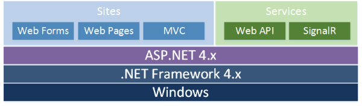

Historia de ASP.NET Core
Apareció en enero de 2002 con la versión 1.0 del .NET Framework, y es la tecnología sucesora de la tecnología Active Server Pages (ASP). ASP.NET está construido sobre el Common Language Runtime, permitiendo a los programadores escribir código ASP.NET usando cualquier lenguaje admitido por el .NET Framework.
Desde sus comienzos, allá por el año 2002, el framework ASP.NET ha incluido todo lo necesario para construir aplicaciones web usando los lenguajes y herramientas de Microsoft. Contenía tanto aspectos de pura infraestructura como marcos de trabajo para el desarrollo de aplicaciones (básicamente Web Forms), y todo construido de forma monolítica. Una consecuencia de este diseño era que cuando usabas ASP.NET en tus aplicaciones, obligatoriamente debías incluir todo el framework aunque no lo utilizaras por completo. Por ejemplo, aunque tu sitio web fuera una simple página web informativa, cada petición se veía obligada a atravesar un complejo entramado de componentes para generar la respuesta que era finalmente enviada el cliente: módulos, handlers, recuperación de estado de vistas, construcción de árboles de controles, seguridad, gestión de errores, etc. Algunos de estos componentes podían activarse o desactivarse desde el archivo de configuración, pero seguían estando ahí, ocupando memoria y tiempo de proceso en cada petición.
Esta estructura asimismo complicaba bastante la evolución del producto, que debía mantener la mirada hacia atrás para proporcionar la mayor retro-compatibilidad posible. Dado que el diseño del producto no era modular, no era posible actualizar un componente o funcionalidad de forma individual, y la complejidad del framework hacía que los ciclos de aparición de nuevas versiones eran muy largos (¡años!), mientras que se estaba viendo que las tecnologías y tendencias para la web evolucionaban muy rápido. Cada versión añadía características nuevas que contribuían a engordar ese monstruo en el que se había convertido ASP.NET, pero normalmente iban muy por detrás de las necesidades reales del mercado y de la comunidad de desarrolladores.
Cuando Microsoft empezó a construir otros marcos de trabajo basados en ASP.NET (MVC, luego Web API, Web Pages, y más tarde SignalR), comenzaron a darse cuenta de que todos ellos arrastraban una pesada losa: el mastodóntico núcleo de ASP.NET, llamado de forma genérica System.Web. Este núcleo, que conformaba la monolítica infraestructura básica sobre la que corrían todas las aplicaciones basadas en ASP.NET, era enorme, complejo, pesado, muy ligado a tecnologías y servidores de Microsoft, y en muchos aspectos estaba mal diseñado, o al menos no diseñado con los parámetros y buenas prácticas que hoy en día entendemos como razonables.
Y en la práctica, la conclusión a la que llegaron es que todos los nuevos marcos de trabajo estaban limitados por su infraestructura. MVC, Web API o SignalR estaban razonablemente bien construidos y pensados desde un principio para ser muy eficientes, pero su dependencia de ASP.NET no era buena para su evolución ni para la apertura de nuevas fronteras como el salto a entornos multiplataforma, además de suponer un lastre importante en cuanto la velocidad y consumo de recursos de las peticiones, tan importantes en los modernos entornos escalables y servicios en la nube.
El siguiente diagrama refleja la pila de tecnologías web de Microsoft con ASP.NET 4.x:
